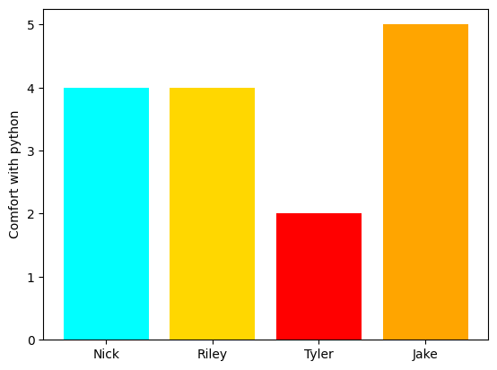

group_data = {
'names': ["Nick", "Riley", "Tyler", "Jake"],
'colors': ["cyan", "gold", "red", "orange"],
'comfort': [4, 4, 2, 5]
}Introduction to Jupyter Notebooks
This notebook is composed of many chunks, containing either python code or formatted text. In this activity you will practice both. Make sure to always run each code chunk once as you work past it.
Get in a group of 3-4 people. You should each fill out your own copy of this notebook.
- Write the names of your group members below, as a bullet point list.
- Riley
- Nick
- Tyler
- Jake
Find something that all of you enjoy for fun. Insert a related picture or meme below.
Everyone decide your comfort level on a scale of 1-10 in python, and your favorite colors from this list.
Edit the code below so that it has your names and corresponding comfort levels.

- Click “Run” on the code chunk below and see the plot that is produced.
(Do not edit the code below!)
plt.bar(x = group_data['names'], height = group_data['comfort'], color = group_data['colors'])
plt.ylabel("Comfort with python")
plt.show()